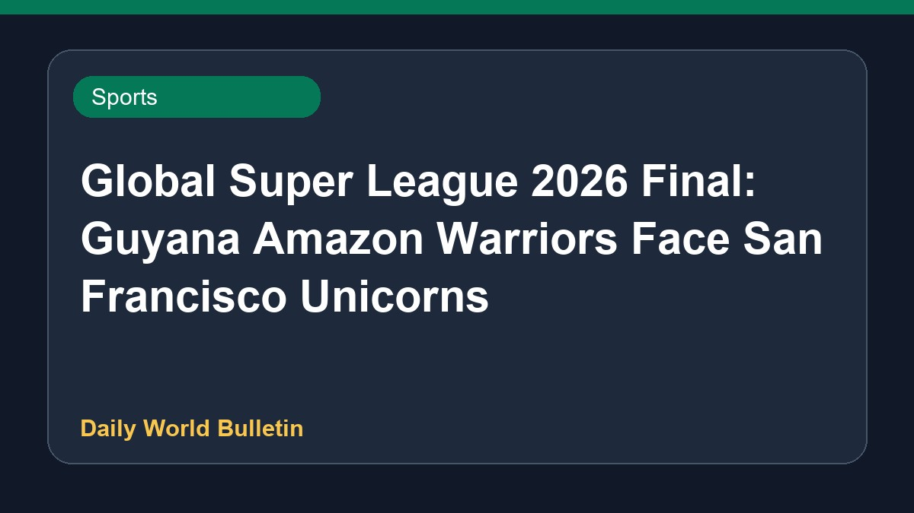

Global Super League 2026 Final: Guyana Amazon Warriors Face San Francisco Unicorns

The San Francisco Unicorns have booked their place in the Global Super League 2026 final after securing a dominant win over the Desert Vipers, where no opposing batter managed to score past 29 runs. They will now face the Guyana Amazon Warriors in the summit clash. Cricket fans in the USA, Canada, and India can follow the live action through various streaming platforms and television broadcasts. Comprehensive coverage includes live scores, match reports, and ball-by-ball commentary as both teams vie for the prestigious T20 tournament title.